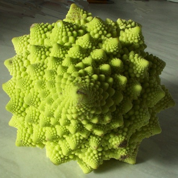

New York University
cSplash 2011
Most of you have probably heard about the Fibonacci numbers (1, 1, 2, 3, 5, 8, 13, …) and how they are found practically everywhere in nature. But has anyone ever given you a convincing reason why? In this class, we will go through the history of the Fibonacci numbers and see for ourselves their allure through the ages, point out common misconceptions regarding their ubiquity, and finish up by giving a very "rational" reason for their emergence in the context of flower patterns and plant growth. No background necessary!—if you can reason about numbers, then you, too, can learn how nature "knows" math.

Click here to download all files in a compressed archive. Videos in the lecture slides will play only if launched from this directory tree.
Individual materials: